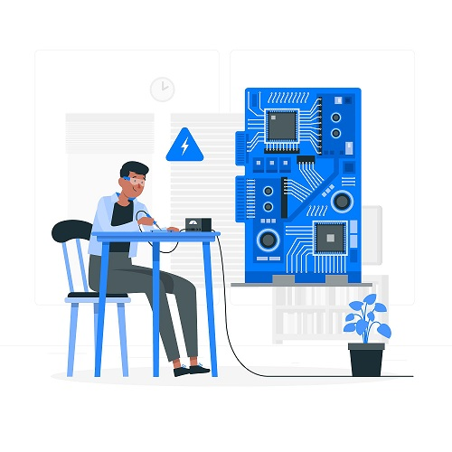
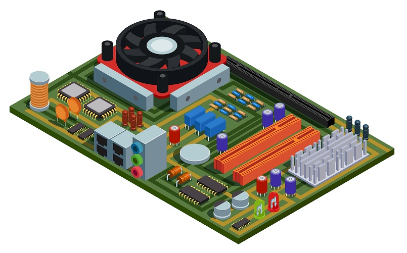

Site Name
Embeddet System Technology
This name was selected because it represents the organization that supports businesses and the local community using technology. It is clear, professional, and directly communicates the purpose of the site.
Optional Domain Availability: embeddetsystems.org
Site Purpose
The purpose of this site is to provide a central hub for businesses and organizations in Nigeria. It offers information about membership benefits, a directory of local businesses, and resources for networking and community events.
Scenarios
- How can I join the Embeddet Systems Oranization?
- Where can I find a directory of local businesses in Nieria?
Color Schema
- Primary Color: #2c3e50 (Dark Blue) - Used for headings, navigation bar, and footer background.
- Secondary Color: #3498db (Light Blue) - Used for buttons, links, and accents.
- Background Color: #ffffff (White) - Used for the main content background.
- Text Color: #2c3e50 (Dark Blue) - Used for body text.
Typography
- Heading Font: Roboto (Sans-serif) - Used for all headings (h1, h2, h3).
- Body Font: Open Sans (Sans-serif) - Used for all body text and paragraphs.
Wireframe
Mobile View:
Desktop View:
